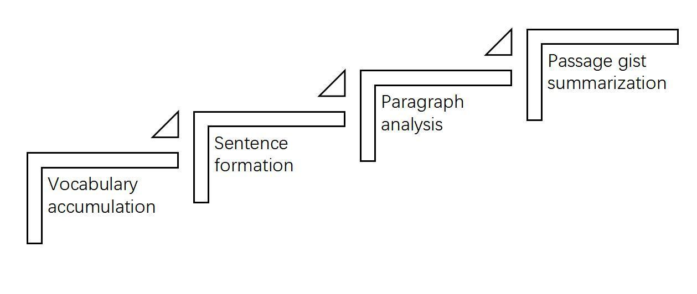
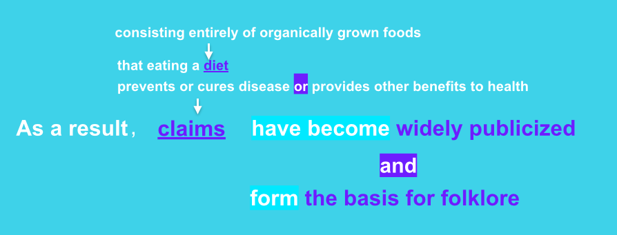

chapter1.1--handout
Background Information
About the Jazz Age（爵士时代）
“爵士时代”这个名字缘起于菲兹杰拉德，他本人是这么形容的：
"It was an age of miracles, it was an age of art, it was an age of excess, and it was an age of satire."
这是一个奇迹的时代，一个艺术的时代，一个挥金如土的时代，也是一个充满嘲讽的时代。”
这段时期从1918年第一次世界大战落幕，跨越到1929年经济大萧条（The Great Depression）来临之前，也被称为“咆哮的二十年代”（The Roaring Twenties）, Roaring这个词用来形容这个时代再适合不过了——喧嚣、狂热、绚丽，一战后美国的物质财富迅速累积，但另一面是道德的崩塌沦陷，造成了一种近乎疯狂的景象。
那么菲兹杰拉德为什么用“爵士”来形容这个时代呢？爵士是音乐流派的一种，比较特别的是，它就是在20世纪初诞生的。
爵士乐的形成代表了美国本土的一种新声音，并且被打上了放浪形骸、寻欢作乐的标签。因为当时美国为了遏止犯罪颁布了禁酒令（Prohibition），结果是各种非法经营的酒吧（illicit speakeasies）兴起，而这些酒吧里面播放的一般就是当时最流行的爵士乐。由此爵士在某种程度上也象征了当时年轻人追逐享乐、离经叛道的生活状态。
About F. Scott Fitzegerald
F. Scott Fitzegerald（弗·司各特·菲茨杰拉德）1896年出生在美国明尼苏达州的一个商人家庭，虽然祖上富有，但到了他父亲这一代就没落了，所以Fitzegerald其实是个穷小子出身。他从中学起就产生了写作兴趣，后来也是考上了普林斯顿大学（常春藤盟校之一），自己办剧社，演戏剧，才华非常出众。
1917年Fitzegerald加入军队参加第一次世界大战，驻扎军营时，他在一次乡村俱乐部的舞会上认识了Zelda，对其一见倾心并且展开了不屈不挠的追求。最后几度历经波折才抱得美人归。
在结婚后的头几年里，Fitzegerald基本就是在为了钱而写作，对于赚来的钱，夫妻俩也毫无计划，只顾享受金钱和名望带来的满足感。直到生活开始捉襟见肘，泽尔达甚至患上精神疾病，而Fitzegerald也因为酗酒和放纵的生活方式染上了肺结核，去世的时候只有44岁。这对couple着实饱受争议，从一开始的两情相悦、金童玉女到最后的爱恨交加、妒忌争吵，这段婚姻把两个人都带向了深渊。
小说的叙述者Nick和主人公Gatsby身上都可以找到作者本人的影子。比如Nick和Fitzegerald一样都有着显赫的学历（Nick是耶鲁毕业的）；而Gatsby和Fitzegerald一样也是北方的穷小子，在军营里爱上了南方的大家闺秀Daisy（Zelda也来自南方）。
而Daisy和Zelda最本质的相像之处在于，她们身上都带着富家女的虚荣品质，所以爱上她们的男人便仿佛掉进欲望的漩涡，需要不断提供给她们物质和金钱上的富足（当初Zelda同意嫁给Fitzegerald也是在他第一本小说出版并大获成功之后），这种爱情注定也是毁灭性的。
巧合的是，Fitzegerald的人生经历，从无名到显赫到最后的唏嘘，都似乎和他所处的时代进程暗暗吻合了。这大概也是Fitzegerald本人以及这本小说有着如此大的魔力之一吧~
The Epigraph(题词)
Then wear the gold hat, if that will move her; If you can bounce high, bounce for her too, Till she cry ‘Lover, gold-hatted, high-bouncing lover, I must have you!’
—THOMAS PARKE D’INVILLIERS
那就戴顶金帽子，如果能打动她的心肠；如果你能跳得高，就为她也跳一跳，跳到她高呼：“情郎，戴金帽、跳得高的情郎，我一定得把你要！”
——托马斯·帕克·丹维里埃
这个叫做Thomas的作者其实并不存在，他是Fitzgerald在上一本小说This Side of Paradise（《人间天堂》）里构造的一个人物。这本小说讲述的是一个中西部的青年如何热爱一个姑娘（以Fitzgerald的初恋为原型）但被弃，之后参军又爱上了一个纽约富豪千金（以Zelda为原型），但因为贫困，只能眼睁睁看着心上人另有所属。
虽然现实中他娶到了Zelda, 但他在追求初恋时曾挨过对方父亲的一句话却永远让他无法忘怀：“穷小子从来就不该动念头娶富家女孩子。”（"Poor boys shouldn't think of marrying rich girls."）
因此Fitzgerald写这段题词的用意就不言自明了，托马斯一心讨爱人欢喜的奋不顾身和最后的落寞悲凉其实就在指向本书的主角——Gatsby. 在这层意义上，这首小诗不只是为这本书写的题词，它甚至可以看作是Gatsby在小说结尾惨淡献身的墓志铭。
Vocabulary
boast
vt. 自夸，以……为豪（to talk too proudly about your abilities, achievements, or possessions）
And, after boasting this way of my tolerance, I come to the admission that it has a limit.
在这样夸耀我的宽容之后，我得承认宽容也有个限度。
💧boast的用法非常灵活，它的前面可以用人作主语表示“吹嘘，夸耀”，比如：
He’s boasting how much money he has made.
他在吹嘘自己赚了多少多少钱。
💧还可以用地点、事物或者机构作主语，这时候既可以看作是表达一种自豪感，也可以只是单纯用于have/contain的替代，比如：
The room boasts no more than a desk and a chair.
房间里只有一张书桌和一把椅子。
abortive
adj. 失败的，无疾而终的（an abortive action is not successful）
原文：...that temporarily closed out my interest in the abortive sorrows and short-winded elations of men.
使我对人们短暂的悲哀和片刻的欢欣暂时丧失兴趣的...
💧abortive的动词原型是abort，表示“中止...计划/行动”（其实就是give up或stop的进阶表达~）比如俄罗斯发射的一枚载人火箭因为升空后出现问题，航天员便中止了飞行计划然后紧急降落，The Guardian（英国《卫报》）上的标题就是“Space crew abort flight after post-launch rocket failure”.
💧abort还可以表示“堕胎，流产”（to end a pregnancy）, 名词形式就是abortion.
💧再来看abortive, 直接从动词引申过来，表示“失败的，夭折的”（fruitless, unsuccessful）, 但abortive sorrows理解为“失败的悲哀”似乎有点奇怪。其实这里abortive和前面的short-winded意思类似，都是表示“短暂的，随时中止的”（tending to cut short）.
Crush Your Problems
- In consequence, I’m inclined to reserve all judgments, / a habit that has opened up many curious natures to me / and also made me the victim of not a few veteran bores.
久而久之，我就惯于对所有的人都保留判断，这个习惯既使得许多有怪僻的人肯跟我讲心里话，不少世故并且无聊的人也把我当成倾诉对象。
💧句式拆解
a habit作同位语，也就是指I'm inclined to reserve all judgements这个习惯。后面的that是定语从句修饰a habit, 用来强调这种习惯让他深受其害。
💧表达精讲
①opened up many curious natures to me, 使我听到了许多性格怪异之人的心里话。natures在这里就是指characters.
②make sb the victim of, 直译为“使某人成为…的受害者”，另一种表述方式为 fall victim to...（fall有“落入，沦为”的意思）。这样比直接说be badly affected或be destroyed by不仅要简单还要生动得多！看下面这个句子：
Many small businesses have fallen victim to the recession.
许多小企业成为经济衰退的受害者。
注意原文victim并不真正指受害者，而是一种幽默诙谐的说法。
③veteran bores 不太好理解，veteran表示“世故的，经验丰富的”，暗含经历某事时间长的；bore指“无趣之人”，所以这里veteran bores可以理解为people who've been bores for a long time, 或者是people who are born to be bores, “向来（天生）无趣之人”。（这里的解释和译文不同，供大家参考~） - The abnormal mind is quick to detect / and attach itself to this quality / when it appears in a normal person, / and so it came about / that in college I was unjustly accused of being a politician, / because I was privy to the secret griefs of wild, unknown men.
如果心理正常的人有这种脾性，心理不正常的人很快就会察觉并抓住不放。由于这个缘故，我上大学的时候就被不公正地指责为政客，因为我总有机会聆听情绪失控的陌生人倾诉他们不为人知的伤心事。
💧句式拆解
这句话的理解重点在于弄明白各个名词/代词所指代的内容——
①The abnormal mind指“心理不寻常的人”，和下文a normal person相对（在这里“寻常人”暗指Nick本人）；itself也是指the abnormal mind.
②this quality联系上文可以知道是指inclined to reserve all judgements这种“保留所有评判”的品质/脾性；
③when it appears中it指this quality.
💧表达精讲
①attach oneself to “依附于，紧抓住”。attach在英文邮件中还可以用来表示“随信附上”： Attached please find xxx.
②be privy to “准许知情，可参与秘事”（be allowed to know about sth secret）.
③secret griefs “秘密的伤心事”（grief在这里作可数名词，指一件件的悲痛事）。
这里大家可能会奇怪为什么不随意批判他人就会被指责为政客呢？因为政客在人们眼中实则是没有原则立场之人，表现得世故圆滑。所以作者不轻易发表论断，并由此招来了很多陌生的人向他倾吐心事，一些人就把这种类同于政客收买人心的行径。 - Most of the confidences were unsought — / frequently I have feigned sleep, preoccupation, or a hostile levity / when I realized by some unmistakable sign / that an intimate revelation was quivering on the horizon.
大多数私事并不是刻意打听的，通常的情况是——每当有准确的迹象让我意识到，有人又要吐露心声时，我就假装睡觉，假装心不在焉，或者装出很不友好、 玩世不恭的样子。
💧句式拆解
①破折号在这里的作用是解释原因，后面另起一个完整句。
②by some unmistakable sign 是介词短语作状语，表方式，可以先忽略不看；那么when从句中的主体部分就是I realized that...，that引导宾语从句。（这里因为that从句比较长所以放在了状语后面）
💧表达精讲
①confidences 在这里用了复数形式，表示“秘密”（secret），也就是好朋友聚在一起喝酒的时候会讲的知心话（share/exchange confidences）.
②an intimate revelation 指“吐露私密事”，revelation相当于disclosure, “揭露，披露”。
③was quivering on the horizon 从字面上理解是“在地平线上颤动着的”。可以联想海边的日出：太阳仍未完全升起的时候，看起来仿佛就在海平面上蠢蠢欲动着等待喷薄而出。所以形容一件事on the horizon也就是在说它是“即将发生的、到来的（to seem likely to happen in the future）”.
💧外刊高频短语
我们在阅读英文报刊的时候，还会经常看到on the horizon和动词loom一起出现：
An economic crisis is looming on the horizon.
经济危机正在逼近。
loom可以学起来一起用哦~它也是表达“（问题/困难）逼近”的意思。
- ...for the intimate revelations of young men, / or at least the terms in which they express them, / are usually plagiaristic / and marred by obvious suppressions.
因为年轻人倾诉的心事，或者至少他们倾诉时所用的语言，往往是雷同的，而且多半遮遮掩掩不会全盘托出。
💧句式拆解
①for引导原因状语从句；
②the terms in which they express them相当于they express them in the terms which...
💧表达精讲
①terms 在这里表示“方法，途径”，in...terms就相当于in a...way, “用……方法/方式”。 比如：We explain in simple terms what the treatment involves. （我们用简单的语言来解释治疗的内容。）
②plagiaristic 是“剽窃的，抄袭的”，这里可以理解为“雷同的，如出一辙的”；这个词的名词形式是plagiarism, 我们在写论文的时候会用到的查重软件就叫做Plagiarism Checker/Detector啦~
③mar 即“玷污，毁坏”，和spoil一样可以作为使用频率较高的ruin的替代词。 - When I came back from the East last autumn / I felt that I wanted the world to be in uniform / and at a sort of moral attention forever; / I wanted no more riotous excursions / with privileged glimpses into the human heart.
去年秋天我从东部回来的时候，我觉得我希望全世界的人都穿上军装，并且永远在道德上保持一种立正姿势。我不再要参与放浪形骸的游乐，也不再要偶尔窥见人内心深处的荣幸了。
💧表达精讲
①be in uniform 直译为“穿上军装”，其实也就是“保持严肃统一”；
②at attention 源于stand at attention这个说法，表示“立正”姿势，大家可以猜一下“稍息”是什么？就是stand at ease啦~所以at a moral attention指在道德上保持“立正”（也就是“品德正直”）。
③riotous excursions, riotous指“放荡、疯狂的”（wild, uncontrolled）, excursion常指“短途旅行”，这里是“偏离正道，脱轨”，也就是不干正经事，成天玩乐，甚至有不道德的行为。
④with privileged glimpses into human heart, “窥见人内心深处的荣幸”，glimpses into 表示“窥探，窥视”；privileged也是在呼应上文说的Most of the confidences were unsought.（是别人主动来找我倾诉，给了我这个荣幸。） - If personality is an unbroken series of successful gestures, / then there was something gorgeous about him, / some heightened sensitivity to the promises of life, / as if he were related to one of those intricate machines / that register earthquakes ten thousand miles away.
假如人的品格是一系列连续不断的成功的姿态，那么这个人身上就有一种瑰丽的异彩，他对于人生的希望具有一种高度的敏感，类似一台能够记录万里以外的地震的错综复杂的仪器。
💧句式拆解
①If personality is...是条件状语从句，注意这里不是虚拟语气（用了一般现在时）。
②some heightened sensitivity...作为前面somthing (gorgeous about him) 的同位语。
③as if he were related to...运用了虚拟语气，表示与实际相反的状况，因为Gatsby并不真的是地震仪。
💧表达精讲
①an unbroken series of successful gesture, 这里把人的品格比喻为“一系列不间断的成功姿态”，乍看似乎有些不着边际，但我们可以抓住两点来理解：首先是用了unbroken和series来强调“持续性”；其次是successful这个词，也就是每一个动作、所做的每一件事都要是成功的。设想一下，一个人如果要一直保持在每一件事上都能成功该需要多大的坚韧、忍耐（tenacity and persistence）? 而Gatsby就有这样gorgeous的品格。
②some heightened sensitivity to the promises of life 是对something gorgeous的进一步解释——这是一种“对于美好生活的高度敏感”，也就是总是能够燃起信心而不被打倒。
③be related to 相当于be connected/linked to, 这里把Gatsby和一种精密的仪器类比（intricate machines）, 精密的程度甚至达到可以探测万里以外的地震，这里其实就是强调上文提到的高度敏感（hightened sensitivity）.
- This responsiveness had nothing to do with that flabby impressionability / which is dignified under the name of the “creative temperament.” — it was an extraordinary gift for hope, a romantic readiness / such as I have never found in any other person / and which it is not likely / I shall ever find again.
这种敏感与美其名曰“创造性气质”的多愁善感毫不相干——它是一种总是充满希望的美好天赋，是一种总是怀抱浪漫的气质。 这种气质，我从未在别人身上见过以后也不太可能见到了。
💧句式拆解
①破折号在这里是起“转折”的作用（和上面第2点的“解释原因”不同哦~），相当于but.
②such as在这里不是“比如”，而是另一个结构，我们可以改变一下语序来帮助理解：it was / such an extraordinary gift for hope, a romantic readiness / as I have never found in any other person / and which it is not likely I shall ever find again.
such...as...表示“像……一样的……”，as引导定语从句；and后面是which引导的另一个定语从句，和as从句并列，都是修饰such后面的部分。
💧短语精讲
①flabby impressionability 是指一种看上去总是软软捏捏，易受别人影响的品质，flabby即weak, impressionable即“易受影响的”（capable of being easily impressed）.
②creative temperament 直译为“创造性气质”，在这里是用于调侃前面提到的“易受影响、性情变化很大的人”。
③an extraordinary gift for hope 表示“总是能够怀抱希望”；a romantic readiness可以理解为always ready and willing to be romantic/idealistic. 这里是想说明Gatsby其实是一个理想/浪漫主义者，时刻准备着实现美好生活的愿望（把车子、房子都拿到手，甚至抱得美人归）。 - No — Gatsby turned out all right at the end; it is / what preyed on Gatsby, what foul dust floated in the wake of his dreams / that temporarily closed out / my interest in the abortive sorrows and short-winded elations of men.
不——盖茨比本人到头来倒是无可厚非的、使我对人们短暂的悲哀和片刻的欢欣暂时丧失兴趣的，却是那些吞噬盖茨比心灵的东西，是在他的幻梦消逝后跟踪而来的恶浊的灰尘。
💧句式拆解
这里分号后面是一个强调句it is...that..., 强调的部分由两个what引导的从句构成。
💧表达精讲
prey on (sb’s mind) 表示“使某人苦恼不已，折磨某人”；
💧外刊高频短语
in the wake of 表示“紧随而来的（尤指不好的后果）”（wake的原义是“船驶过后的水波、航迹”），可以代替我们平时用得很多的as a result/consequence of.
比如：Over the past year—ever since the #MeToo hashtag went viral in the wake of gruesome allegations of sexual assault levelled against Harvey Weinstein...
— The Economist
过去的一年里，紧随可怕的Harvey Weinstein性侵诉讼案后是“#Me Too运动”标签“病毒式”的传播… - He had casually conferred on me the freedom of the neighborhood.
他无意之中授予了我这一带地方的荣誉市民权。
💧表达精讲
①confer on sb a degree/honor/title 表示授予某人学位/荣誉/称号。
②freedom of the city 是指荣誉市民，所以freedom of the neighborhood可以理解荣誉社区居民。
这句话表示Nick虽然搬来西卵村没有多久，但是因为别人向他问路，而让他有了自己是当地常住居民的感觉，所以有了一种荣誉感。
Content Analysis
初读之下，Fitzgerald的语言让人感觉十分隐晦、难以把握其要义，并且叙述上也有一定的跳跃性。这和作者想要贴合爵士时代的气质有关，而且Fitzgerald本人也非常擅长通过细枝末节来表达故事的主旨。因此这个部分我们会通过梳理线索的方式来把握内容的逻辑；也鼓励大家根据这些线索多去思考，说不定就会找到Fitzgerald在写作中的独具匠心之处哦~
💧Clue 1: This book is written as a memoir (回忆录).
这本书是以Nick的第一人称视角来叙述的，他既是旁观者（observer）, 也是参与者（participant）. 因此我们需要把握的关键就是“写作”时间（这里用双引号的意思是Nick并不是真正的写作者）。我们来看看原文里都有哪些地方透露了关于写作时间的信息：
Evidence 1:In my younger and more vulnerable years my father gave me some advice that I’ve been turning over in my mind ever since...
这里的younger years究竟有多早我们不能够确定，但vulnerable这个词很值得玩味。vulnerable表示easy, very likely to be affected by sth（易受……影响的）。一般涉世未深的年轻人容易受到外部环境的影响，价值观体系还不够成熟。所以这里用了叙述过去的口吻，表明Nick现在已经不是在一个vulnerable的年龄段了，而是更加sophisticated（世故老道）。
Evidence 2: When I came back from the East last autumn...
这里说的came back from the East就是从纽约回来，所以接下来发生的故事都是在last autumn也就是去年秋天之前发生的，这就确定了本书作为memoir的基调 。（还有一点也蛮有意思的：为什么Nick回来一年后才开始写这本书呢？）
💧Clue 2: Nick has a complex feeling towards Gatsby.
Nick对Gatsby的态度其实是矛盾又暧昧不明的，为什么这么说呢？
Evidence 1: Only Gatsby, the man who gives his name to this book, was exempt from my reaction — Gatsby, who represented everything for which I have an unaffected scorn...then there was something gorgeous about him...
当Nick看到那么多人都是虚荣肤浅、内心空无一物的时候，他很失望厌倦，所以表明再也不想要这种glimpses into the human heart. 唯独对于Gatsby, Nick说他是个例外。
一方面，Gatsby代表了Nick所鄙夷的一切；另一方面，Gatsby身上又有着某种美妙炫目的东西——他总是怀抱着美好的希冀和浪漫的情怀。所以Nick最后得出的结论是，令他感到鄙夷的，并不是Gatsby这个人本身，而是那些吞噬摧毁了Gatsby的东西，因此他对Gatsby的态度是暧昧不明的（ambivalent）.
Today's Bonus
欢迎来到“爱在爵士时代”书单~大家可能会发现，进入高阶阅读后，词汇量对理解原文意思的影响已经很小了，这也标志着我们需要提升另一方面的技能，也就是老师今天要在彩蛋中为大家介绍的哦~
先来卖个关子，如果成功get这个技能， 我们可以达到什么程度呢？
💧“一目十行”的阅读速度
💧不论多长的句子，不需要划主干就可以快速掌握意思
简单来说，就是达到英文母语者的阅读水平啦！
首先我们需要从一个新的视角来看英文的层次结构，这里稍微引入一点理工科的思维：英语中的词句段篇，无异于几何（geometry）中的点线面体，在geometry中，如何构成一个物体，是需要有点构成线，由线构成面，进而构成体。
我们可以把想用英文表达的内容想象成一个实在的物体，比如一朵花，一只狐狸，一滴水滴，as you wish，构成这个物体需有有正确的或者规律性的点线面排序，否则会是一个chaotic的状态。
在英文阅读中，词汇的价值在于是一个细节的点，通过词的积累构成句，进而形成段落和篇章，而词汇的点如何有序的形成句子的线，是能否做好阅读的最重要的一环（这是光靠增加词汇量无法解决的问题），也就是要掌握排序中最重要的套路：意群。

意群（sense group）, 所谓sense group，指的是a group or sequence of words conveying a particular meaning or idea, 简单说来就是意思的群落。
每一个单个的词具备的意思有很多种可能，放在一起的一个群落，才会有特定的意味，比如说水，可以是口渴时的需求也可以是化妆前的保养，滴可以是一个drop也可以是老司机发车，而水滴阅读这个意群，就是特定的能力加分神器啦～
💧意群阅读法
（reading in sense groups—RSG阅读法），可以提高阅读速度和效率的关键就在于，改变传统的逐字的“点状阅读”扩展为逐行的“线状阅读”, 再扩展为沿本行垂直而下的“面状阅读”。最终训练“一目十行” 阅读的能力。
我们试着用一个句子来感受一下：
As a result, ／claims ／that eating a diet ／consisting entirely of organically grown foods／ prevents or cures disease or provides other benefits to health／ have become widely publicized ／and form the basis for folklore．
我们尝试根据意群来划分一下不同的小组，之后发现，每一个小组在句子中都扮演一定的角色：

不难发现claims之后that…health的意群都是在修饰claims是什么样的：
claims（吃有机食品的diet／会控制疾病or对健康有好处），再看后面的意群，整理出来就是蓝色字部分，claims变得广泛流传，and形成folklore的基础。
整理一下：因此，／一些言论／认为吃有机的食品／会阻止或治愈疾病，或者提供其他对健康的益处，／这种言论已经被广为流传，／并且形成了风俗的基础。
通过意群的分解，句子的逻辑会很清晰直接的浮出水面，就算有一些词不认识，也可以根据意群去infer一下就知道啦（我晓得聪明如你一定知道infer是推断的意思）。
以上是水滴阅读为大家带来的RSG阅读法，具体的意群阅读实践，会在每天的难句分析模块进行，要坚持哦～